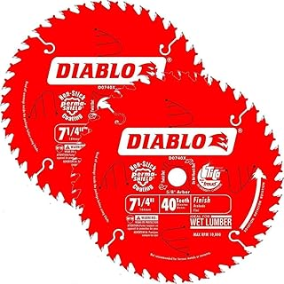

Best Saw Blades of 2026
The Most Overlooked Upgrade in Your Workshop
Every circular saw, miter saw, and table saw ships with a blade. Every single one of those stock blades is mediocre. Manufacturers include a cheap blade because they know you'll compare prices — and a $5 blade lets them hit a $59 price point. The first thing you should do after unboxing any new saw is throw away the included blade and put on something sharp.
A quality blade cuts cleaner, stays sharp longer, reduces motor strain, and produces less tear-out. It is the single most cost-effective upgrade you can make to any saw. Here are the ones worth buying.
Our Top Picks
| Pick | Blade | Teeth | Price | Best For |
|---|---|---|---|---|
| 🏆 Best Combo | Diablo D0724X | 24 | $15 | All-purpose: ripping + crosscutting |
| 🎯 Best Crosscut | Freud LU79R008 | 80 | $49 | Smooth finish cuts, plywood, veneer |
| 🪵 Best Ripping | Diablo D0724R | 24 | $19 | Fast ripping through thick hardwood |
| 🔩 Best for Metal | Diablo D0748CF | 48 | $29 | Steel studs, aluminum, non-ferrous |
What the Numbers on a Saw Blade Actually Mean
You've seen them on every blade package: 7-1/4" x 24T. The first number is diameter in inches. The second is tooth count. A 24-tooth blade rips fast and rough. A 60-tooth blade crosscuts slow and smooth. An 80-tooth blade is for finish work. Here's what you need for each job:
| Tooth Count | Best For | Cut Quality | Speed |
|---|---|---|---|
| 24T | Ripping lumber, framing, demolition | Rough — splintering on crosscuts | Fast |
| 40T | General purpose — the "combo" blade | Good — some tear-out on plywood | Medium |
| 60T | Crosscutting, plywood, melamine | Clean — minimal chipping | Medium-slow |
| 80T+ | Finish carpentry, veneer, laminates | Excellent — glass-smooth edges | Slow |
If you only own one blade: get a 40-tooth combo blade. It rips and crosscuts acceptably. Two blades: add a 24-tooth ripping blade. Three: add an 80-tooth finish blade. You don't need the full set on day one.
Best Combo: Diablo D0740X

Diablo D0740X 7-1/4" x 40T General Purpose Blade
40-tooth · ATB grind · Thin kerf · Laser-cut stabilizer vents · TiCo carbide
Check price on Amazon →What we like
- TiCo carbide teeth hold an edge 4x longer than standard carbide
- Laser-cut stabilizer vents reduce vibration and blade warp during long rips
- Thin kerf (0.059") means less material waste, less motor strain, faster cuts
- Perma-Shield coating resists gumming up when cutting pressure-treated or wet lumber
- $23 for a blade that outperforms many $40+ competitors
What we don't like
- 40T leaves visible scoring on plywood crosscuts — not a finish blade
- Thin kerf is efficient but less stiff than full kerf. Not ideal for production shops
- Anti-kickback shoulder design helps but doesn't replace proper technique
Best Crosscut: Freud LU79R008
80 teeth. Alternate Top Bevel grind. Full kerf. The Freud LU79R008 is a miter saw blade first and a circular saw blade second. At 80 teeth, it's too slow for ripping lumber but produces edge quality on crosscuts and plywood that eliminates the need for sanding. The full-kerf design resists deflection better than thin-kerf blades — important when precision matters more than motor load. If you build furniture, install trim, or cut $100 sheets of walnut plywood, this $49 blade pays for itself the first time it saves a panel from tear-out.
Best Ripping: Diablo D0724R
Ripping blades are designed to clear chips fast. The deep gullets between teeth scoop out material like a shovel, preventing the blade from bogging. The Diablo D0724R's 24-tooth flat-top grind rips 8/4 oak, maple, and ash without burning. The flat-top grind leaves a flat bottom on dados and rabbets — something an ATB blade can't do. At $19, this is a specialty blade you'll use for a single task and it'll outlast several combo blades doing the same work.
Kerf: Thin vs Full — Which One?
- Thin kerf (0.059"–0.071"): Cuts faster. Less waste. Less strain on the motor. Ideal for cordless saws and jobsite saws under 3HP. Our top combo pick is thin kerf because most people reading this are using jobsite saws.
- Full kerf (0.125"): Stiffer. Deflects less. Produces straighter cuts in thick, dense hardwoods. Ideal for cabinet saws with 3HP+ motors. The Freud crosscut pick is full kerf because precision finish work demands it.
If your saw has less than 3HP, stick to thin kerf. The motor will thank you.
How to Tell When Your Blade Is Dull
- Burn marks on the wood. The blade is rubbing instead of cutting. It's done.
- Motor bogs in material it used to breeze through. Dull teeth = more friction = more load.
- Splintering on the underside of cuts. A sharp blade shears wood fibers. A dull blade tears them.
- You can't remember when you bought it. If it's been more than a year of regular use, replace it. Carbide doesn't last forever.
The Bottom Line
If you own one blade: Diablo D0740X at $23. It does everything well enough. If you're serious about woodworking, add the Freud LU79R008 for crosscuts and the Diablo D0724R for ripping. Three blades for $91 — and they'll outlast ten packs of the stock blades that came with your saws.